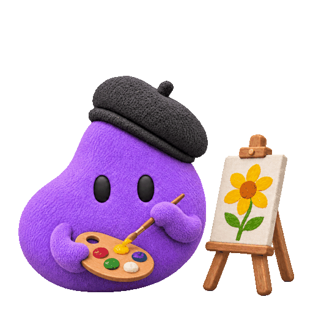

Doany draws
Canvases in your repo
Your agent writes each canvas as an HTML file next to your code, with your real tokens.
Exploratory draft for the doan.design download page, drawn before /feature to settle the look (request: docs/features/doan-landing/design.md). One page at two widths, desktop 1440 and mobile 390: nav, hero with the buddies' group photo, a demo video, five feature cards where each buddy does one thing, a closing download and the footer. Everything here is new and not in code; there is no site yet (PRODUCT §5 'Deferred'). References, checked in a browser on 2026-11-16: buzz.xyz (giant wordmark hero, framed app video under a two-line heading, character cards, closing CTA over the wordmark, dot-grid ground) and aside.com (single "Download for macOS" action in nav and hero, rounded closing CTA panel, link footer). The brand pieces come from shipped or selected drafts: the wordmark and tagline from buddy-welcome.html, the group photo from buddy-welcome.html / buddy-installer.html, the dot grid from the canvas board.
Wordmark 152, tagline 32 (title role), one-line lede saying what Doan is; the photo (800) starts inside a 900-high first screen, with every buddy's eyes in view, and ends about 130 below it. Sections 128 apart; content 1280 wide, video 1120. Five cards in one row, 16 apart, each with its buddy's tint (palette step 3) behind the buddy and its step 11 on the "who" line.
A Mac app where Claude Code, Codex, Cursor, Antigravity or GitHub Copilot draws your designs in your repo.
macOS on Apple silicon · Open source (Apache-2.0)

Your agent writes design drafts as HTML canvases in your code repo, and you talk to it about them, pointing at frames and elements.
 Placeholder poster · demo video not recorded
Placeholder poster · demo video not recorded

Your agent writes each canvas as an HTML file next to your code, with your real tokens.
 New pose needed
New pose neededPut frames, elements and spots into your message. The agent gets them as anchors.

Claude Code, Codex, Cursor, Antigravity and GitHub Copilot, in Doan or in your terminal.
Pick a design preset, such as shape, critique or clarify, and the agent works with that brief.
 New pose needed
New pose neededExport a canvas as one HTML file that opens in any browser, without Doan or the repo.
macOS on Apple silicon · Open source (Apache-2.0)
Same order. Wordmark 96, tagline 20; actions stack full width. Cards become rows: a 120 square with the buddy, text beside it.
A Mac app where Claude Code, Codex, Cursor, Antigravity or GitHub Copilot draws your designs in your repo.
macOS on Apple silicon · Open source (Apache-2.0)
Your agent writes design drafts as HTML canvases in your code repo, and you talk to it about them, pointing at frames and elements.
Your agent writes each canvas as an HTML file next to your code, with your real tokens.
Put frames, elements and spots into your message. The agent gets them as anchors.
Claude Code, Codex, Cursor, Antigravity and GitHub Copilot, in Doan or in your terminal.
Pick a design preset, such as shape, critique or clarify, and the agent works with that brief.
Export a canvas as one HTML file that opens in any browser, without Doan or the repo.
macOS on Apple silicon · Open source (Apache-2.0)
buddy-welcome.html), with the group photo under the actions instead of beside them. One strong action, as aside.com has: Download for macOS; GitHub is the quiet second, like buzz's "Open the Repo"..doan/assets/landing/video-poster.png, a copy of docs/assets/readme/hero.png); its window frame and gradient are already in the image..doan/assets/); Dungdung listens and Dori delivers have only their stills, so those two need new poses.--board-dot, --texture-dots-size) over white, where buzz uses its own dot grid over yellow and blue..doan/assets/buddies/README.md).